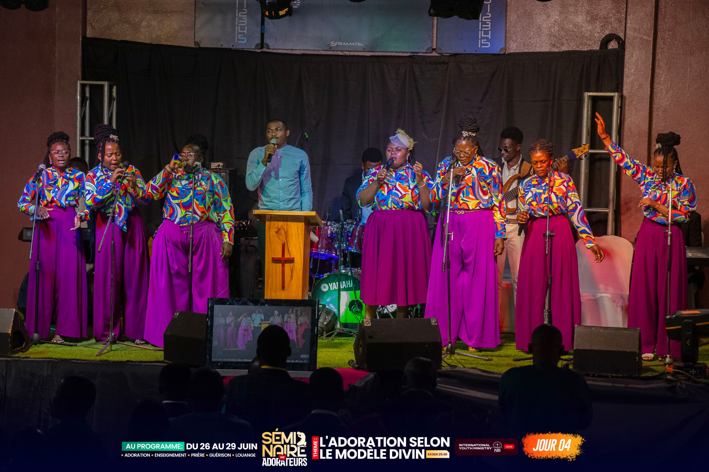
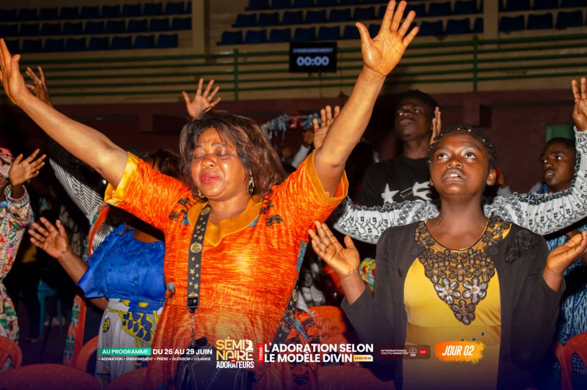

Jésus au centre de notre adoration
Retour sur la vision, le contexte et les résultats attendus de la Croisade Que Ton Règne Vienne — portée par IYM, International Youth Ministry. Jean 4 : 23-24.
JESUS AU CENTRE DE NOTRE ADORATIONDates
17–20 Déc. 2026
Lieu
Bafoussam
Cible
1500 Personnes


Fondée en 2022
Reconnue le 23 juin 2023
Plus qu'une vision
IYM (International Youth Ministry) est une association artistique chrétienne à but non lucratif et apolitique. C'est un mouvement de jeunes dynamiques travaillant à ressembler à Christ au travers de l'art dans le monde entier.
Fondée depuis 2022 et officiellement reconnue par l'État comme association le 23 juin 2023, elle a ouvert ses portes au public et aux enfants de Dieu par ses différentes activités. L'association est basée au Cameroun.
« Un mouvement de jeunes dynamiques travaillant à ressembler à Christ au travers de l'art dans le monde entier. »
Contexte de Justification
Dans un contexte prophétique où le Cameroun est une nation de réveil pour les autres nations, la région de l'Ouest est d'un rôle capital et indispensable.
Terre de louange et d'adoration, le Seigneur nous convie à prendre conscience car c'est le temps de vivre et de manifester l'adoration véritable. C'est dans cette optique que nous, les jeunes venus de tout horizon, acceptons d'être utilisés par Dieu afin d'apporter notre pierre de construction pour le Cameroun Nouveau au travers des Croisades Que Ton Règne Vienne.
Provoquer un réveil par la louange et l'adoration.
Susciter une armée d'adorateurs.
Établir des autels d'adoration dans les villes et villages.
Répandre une atmosphère de louange et d'adoration.
Activités Préparatoires
Une série d'activités préparatoires pour mobiliser, consacrer et unir le corps de Christ avant la croisade.
24h de louange non-stop
Tournois de football
Worship Sunday
Nuits de louange
Caravanes
Actions sociales
Retraites spirituelles
Jeûne et prière
Challenge Ma Ville, Ma Prophétie
Stratégie de mobilisation
Communication numérique, communication presse-radio et télévision, communication print...
Ressources humaines
Ressources matérielles & financières
Appel à la Participation
Toutes personnes désireuses de voir le règne de Dieu être établi peuvent prendre part au partenariat.
Date officielle
17 au 20 Déc. 2026
Lieu
Bafoussam
Déroulement
Session du matin et du soir
Contact
Le Seigneur appelle la jeunesse du Cameroun à se lever, à louer, à adorer, et à construire ensemble le Cameroun Nouveau. Soyez au rendez-vous !